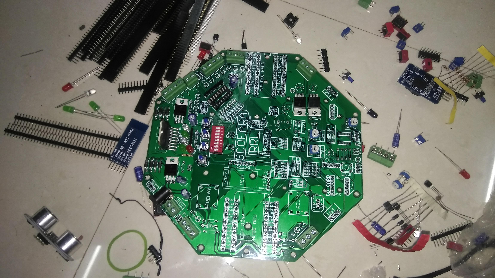
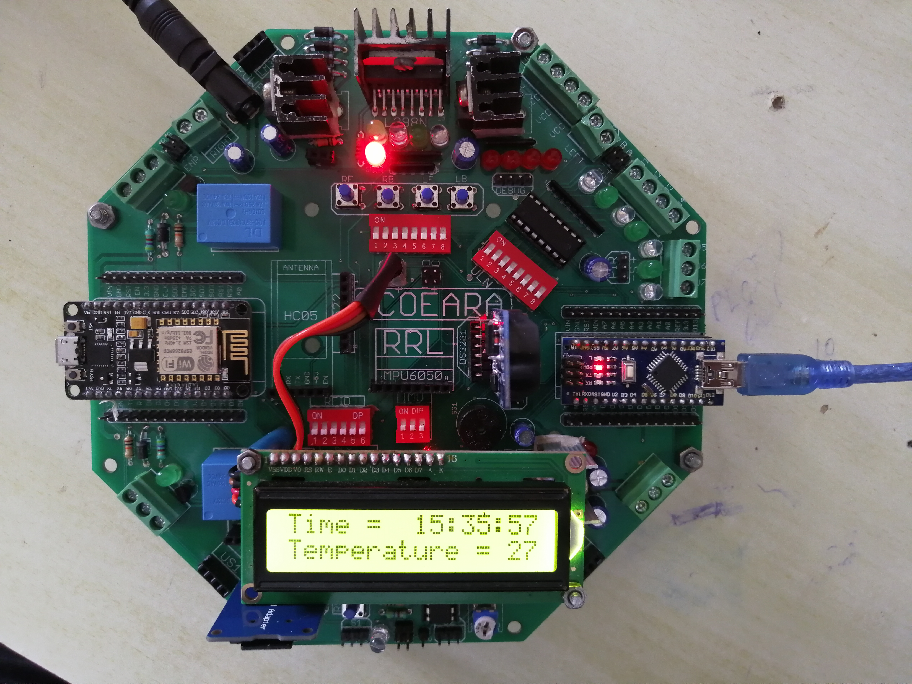
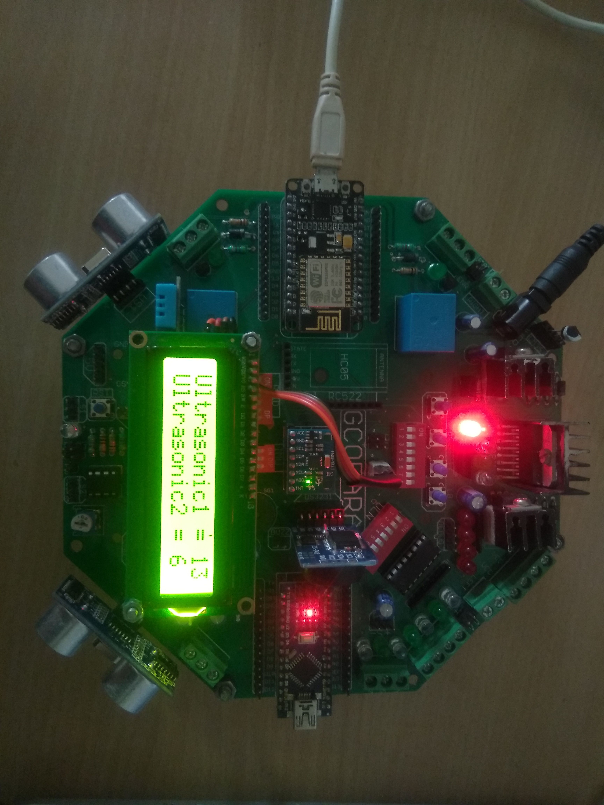
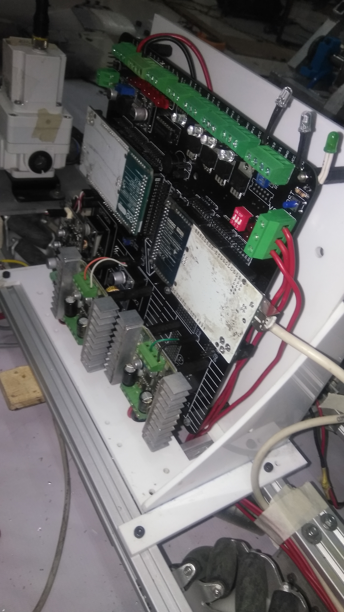
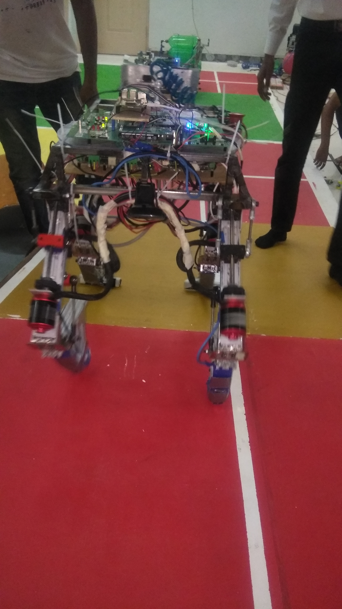
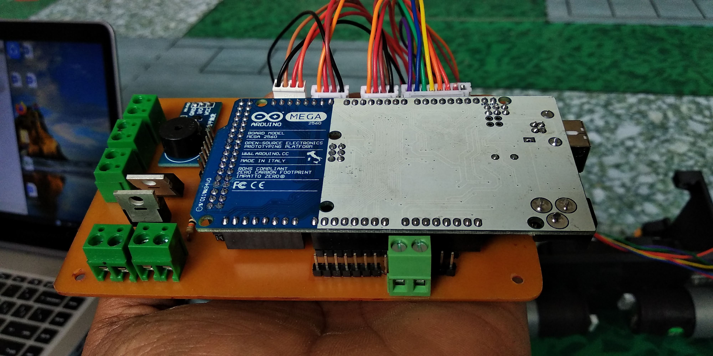
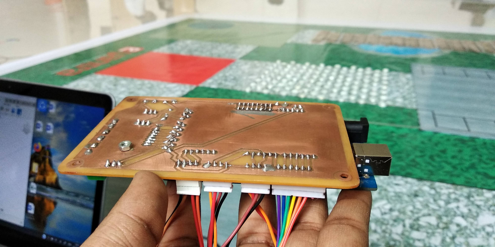
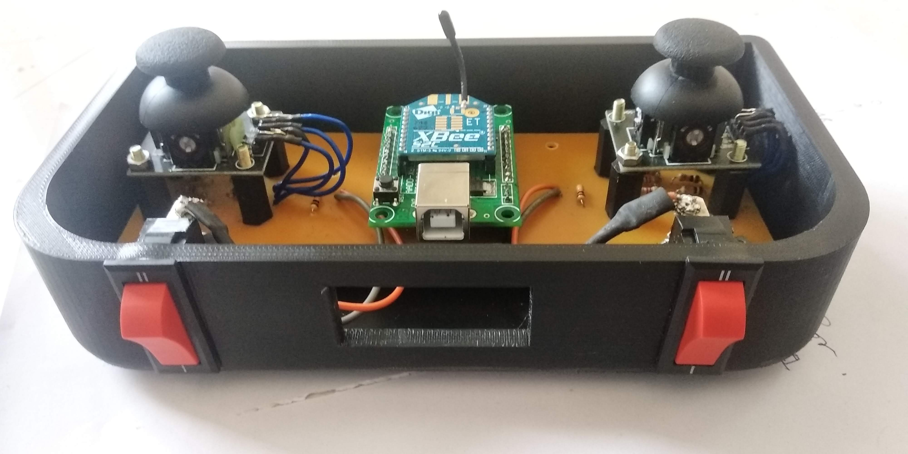
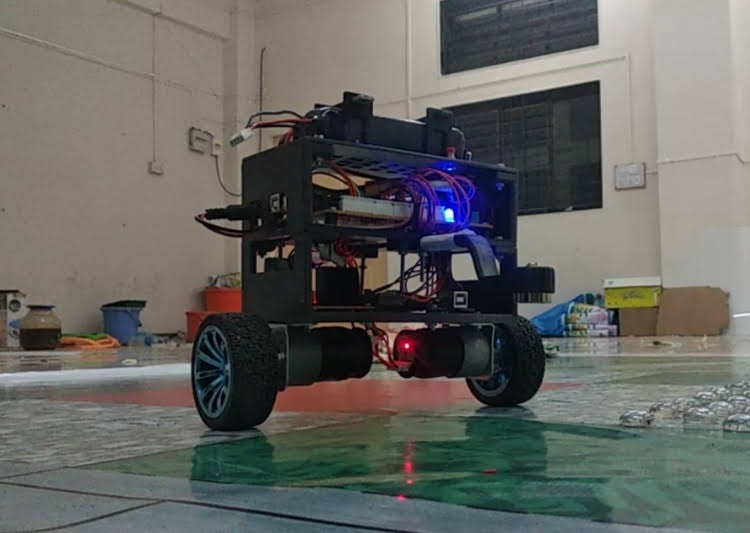

Projects
Graduation Project
Smart and Efficient Techniques for Automatic Guided Vehicle
Today the Automatic Guided Vehicle plays an important role in the design of new factories and warehouses. In an automated process, AGVs are programmed to communicate with other robots to ensure the product is moved smoothly through the warehouse, whether it is being stored for future use or sent directly to shipping areas. AGV is one kind of transportation that follows the given respective paths and route.
Our designed AGV uses the camera for following the line. It has the feature of voltage detection, running time estimation, battery low voltage indication and it is IOT enabled device can be used for storing the data of nodes traversed into the database, the QR code is placed at each node which is scanned using camera and data in QR code is extracted to know which task is to be performed. we have used raspberry pi 4 for image processing and Arduino Mega 2560 Microcontroller for locomotion.
Design and manufacturing :
3D Modelling :
After finalizing the project idea We have started the thinking about the chassis, After lot of discussion we have finalized the Tri-wheel Omni chassis for locomotion of AGV. We have used Autodesk® Fusion 360™ for 3D modelling of Tri-wheel omni chassis and after completion of PCB design, I have developed the 3D model of PCB and Whole bot. the wiring diagram is also done using fusion 360.

3D Model of PCB

3D Model of AGV
PCB Design :
I have used Autodesk EAGLE for designing of PCB,I have also designed the customized libraries for some of components. The library/package developemnt tool interacts with the fusion 360 to develop the 3d models of components and it can be easily linked to the footprints of the components. The image of PCB after assembly is shown below.

Assembled PCB
AGV hardware Design:
We have used the Aluminium sheet of 3mm thickness for manufacturing of chassis, The motors are mounted on the aluminium sheet using L clamp, nut and bolts. The Lithium Polymer battery of 12v 8000 mAh is fitted at the bottom of AGV. VNH2sp30 motor driver with 12V Johnson Geared Motor of 300 RPM is used for locomotion. Omni wheel with 58 mm diameter is used. Logitech C270 webcam is used for object detection and line following. The TowerPro MG995 High-Speed Digital Servo Motor having 180 degree rotation with torque of 12 kgcm is used for the picking arm.

Assembled BOT
Click here for Demonstration Video
With this project we had participated in the e-Yantra Ideas Competition and gets selected as one of the Top 49 team in india out of 1346 registered teams. below given the demonstration video.
Mechatronics and IOT kit Developement
When I was in the Third Year we have a mechatronics subject in the syllabus, as the subject was new in the syllabus our department is not having kits to perform experiments. At that time I had participated in ROBOCON Competition for that I had learned about PCB designing. Since I was a beginner I wanted to explore more complex designs but not having the funds for manufacturing PCB and buy the required components. because of that, I had proposed the idea of developing the kit for mechatronics and IOT subjects to the college principal stating the issue. The idea is approved by the Principal and I got the funding of 8000 Rs.
I had designed the PCB and manufactured it from the Lion Circuits company situated in Bangalore where I had done my first campus Ambassador Internship. Later we had purchased the components for the PCB some online and Some from Electronics Market in Pune. After purchasing the components I have done the assembly of the circuit and testing. With the help of this kit, we had performed more than 30 experiments in different subjects of different streams such as Automobile, Mechanical, Instrumentation & Control and E&TC.
Click here for Mechatronics and IOT kit Documents
Component assembly
Testing RTC DS3231
Testing Ultrasonic Sensor
Bluetooth communication testing Video
Competitions
National Robocon 2019
Robocon is a contest organized by Asia pacific Broadcasting union. The theme for ABU Robocon 2019 is given by Mongolia, The theme was about "Sharing the knowledge". It was related to the Urtuu system of Mongolian tradition.
Click here for ABU Robocon 2019 ThemeFor the competition we have a team of 40 members responsible for developement of two robots one is Manual another is Automatic as defined in theme. For manual robot we had selected four wheel mechanum chassis. While the condition for Automatic robot is that it must be quadrupeled (i.e. it must have four legs). so we have designed it accordingly. The Manual robot is operated wirelessly by the operator, for manual robot I had designed the 2 layer PCB. The PCB consists of motor drivers, Arduino mega 2560 microcontrollers, sensors signal processing circuits etc. The automatic robot circuit is hand soldered on zero PCB due to costing and time limitations, which consists Arduino mega 2560 microcontrollers, Inertial measurement unit, display, signal processing circuitry, motor drivers etc.
Circuitry on Manual Robot
Automatic Robot

Team Photo
Click here for Journey Video Team Abhedya 2019 , Government college of Engineering and Research, Awasari, Pune
In the National Robocon 2019 held at IIT Delhi we got AIR 4 Rank and First Rank in Maharashtra.
e-Yantra Robotics Competition (eYRC) 2019
e-Yantra Robotics Competition (eYRC) is a unique annual competition launched in the month of August every year for undergraduate students in science and engineering colleges, polytechnic. Selected teams are given a robotic kit complete with accessories and video tutorials to help them learn basic concepts in embedded systems and microcontroller programming. Abstracts of real world problems assigned as "themes" are then implemented by the teams using the robotic kits.
In eYRC 2019 after round 1 selection we got the Biped Patrol theme. In the theme we have to design the LQR controller for the robot, the robot is two wheel self balanced bot. The two wheel self balance bot has to pass the obstacles in his path. I have designed the 3D model of robot in fusion 360. we had used 3D printing for the manufacturing of the robot, and to reduce the weight. The robot consists of Electromagnetic gripper for picking the object from one place to another, so we have designed the symmetric structure on both sides of bot for gripper. For design of complete Robot we have used the following technologies : 3D modelling, 3D Printing, PCB Designing, PCB etching, soldering etc. The PCB consists of GY87 Inert measurement unit, Arduino mega 2560 Microcontroller, indication Led, Buzzer, Motor driver, zigbee module for wireless communication. for operating the balance bot wirelessly we had used zigbee communication.
In the Biped Patrol theme we get selected as one of 6 finalists out of 1049 teams and has been placed at 4th position.
Balance Bot Circuitry front side
Balance Bot Circuitry Back side
Remote control
Balance Bot
Internships
Electronics Design Engineer at Photom Technologies
Photom Technologies was founded in 2018 with the vision to provide access to carbon free energy for everyone. company is supported by department of science and technology (DST), Govt. of India, Government of Gujarat and Royal Academy of Engineering, UK.
I have joined the Photom Technologies in sept.2019 as electronics design engineer. here my work is to test the circuits, design the PCB, PCB assembly and testing. The PCB was to be designed for the solar panel cleaning robot. here I got the deep knowledge of GSM/GPRS module later I have designed the on board GSM/GPRS, which is used for database management. The details about running time, battery voltage and current, Gps location etc. are stored in database. The solar panel cleaning robot is designed to operate remotely, it uses HC12 Transceiver for wireless communication upto 1000 Meter.
Prototyping GSM/GPRS SIM 800 module
Demonstration of Solar panel cleaning robot